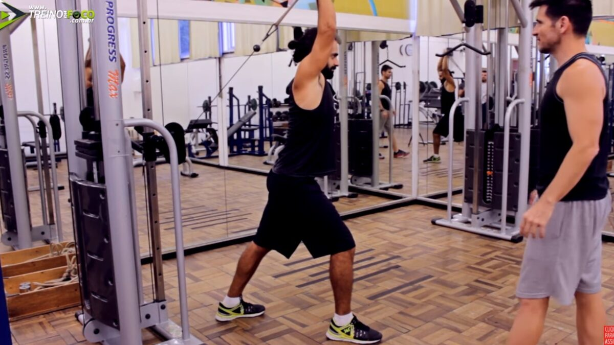

Inferiores + parte de superiores
Cadeira extensora
- Joelhos não ficam fora do banco
- O apoio fica em cima do pé, não na canela
- Não descer todo pois força o joelho ao voltar
- Costas retas no encosto
Carga: 5 kg
Cadeira flexora
- Joelhos não ficam fora do banco
- Apoio superior não deve apertar a coxa
- Pode descer todo o pé, pois joelho não força na volta
Carga: 5 kg
Cadeira adutora
Cadeira abdutora
Hack
Gêmeos em pé máquina
- O que eu faço é o Gêmeos sentado máquina!
- Fazer o exercício com a ponta do pé
- Deixar o encosto em contato com a pele pois o shorts pode escorregar
Carga: 20 kg
Fly
Rosca alternada
Superiores
Supino reto
Peck fly (Peitoral)
Pull down
- Flexionar os joelhos
- Quadris um pouco para trás
- Coluna estabilizada
- Ombros para baixo
- Cotovelos levemente flexionados
Carga: 5 kg por 3x, 6kg 1x
Remada articulada neutra
Remada baixa pronada
Rosca Scott com barra
Tríceps corda
- Enclinar levemente pra frente
- Abrir braços ao descer
- Aproximar mãos dos ombros ao subir
- Cotovelos fíxos
Carga: 4 kg
Tríceps francês com corda

- Pés juntos, corpo levemente inclinado para frente
- Polia posicionada no meio
Carga: 3 kg